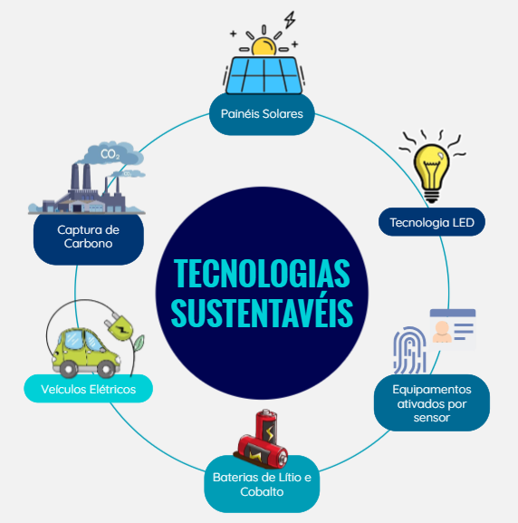
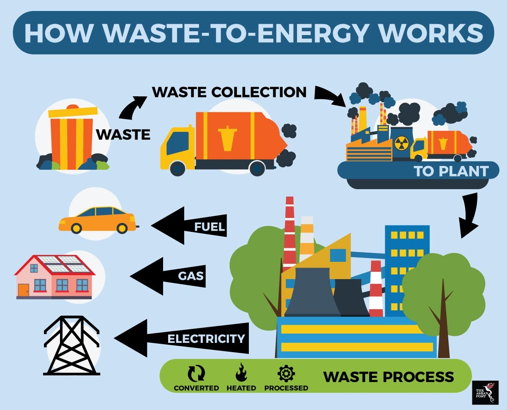

A Integração da Tecnologia Sustentável no Curso de Ciência da Computação
Grande parte dos problemas ambientais que enfrentamos hoje em dia surgiram justamente a partir do
desenvolvimento tecnológico, no entanto, diante do avanço da sociedade moderna, a associação entre a tecnologia e
a sustentabilidade pode ser o melhor caminho para um futuro mais equilibrado. O que distingue a nossa tecnologia
atual e aquela que um dia contribuiu para os impactos ambientais e sociais é que já estamos vivendo as suas consequências,
assim gerando uma conscientização geral.
Devido aos impactos provocados ao meio ambiente, gerados a partir da alta exploração, como por exemplo o
desmatamento, o aquecimento global e as mudanças climáticas, surgiu-se a motivação da sociedade a adotar medidas de
preservação, a fim de amenizar os erros cometidos no passado. Nesse contexto apresentado, as ferramentas tecnológicas
desempenham um papel fundamental, oferecendo soluções e impulsionando a busca por um equilíbrio ecológico. Diante disso,
o curso de Ciência da Computação desempenha um papel fundamental nessa transformação e implementação de tecnologia, já
que oferece ferramentas inovadoras que ajudam a equilibrar o progresso econômico com a preservação ambiental.
A Ciência da Computação oferece soluções tecnológicas que são cruciais para alcançar um equilíbrio entre o
avanço econômico e a sustentabilidade. Por exemplo, o desenvolvimento de algoritmos para otimização de recursos energéticos
e a criação de sistemas inteligentes para gestão de resíduos são áreas em que os conhecimentos tecnológicos são aplicados
para fins ambientais.
O conhecimento atual vem se expandindo exponencialmente, proporcionando novas áreas e introduzindo novos
conceitos, então é de grande importância o alinhamento entre essa evolução tecnológica em função da mitigação de
problemas ambientais. Desenvolver uma tecnologia sustentável não é uma tarefa simples, especialmente no contexto da
nossa sociedade atual, onde soluções rápidas são exigidas, porém contrariando concepções comuns, a integração dessa
tecnologia não está necessariamente associada a uma alta complexidade, na medida que atualmente já possuímos tipos de
ferramentas necessárias que são considerados eficazes e de baixo custo. Isso exige uma manutenção e ação de profissionais
como os de Ciência da Computação, com uma abordagem interdisciplinar, que combina conhecimentos de engenharia, ecologia,
economia e sociologia para criar soluções efetivas e sustentáveis.
Inovações Tecnológicas Sustentáveis que já Repercutem no Ambiente Moderno
É evidente que ainda precisamos evoluir muito no quesito tecnológico, o qual futuramente será ainda mais
usado como uma ferramenta de manutenção ecológica, no entanto as tecnologias atuais já ajudam na causa sustentável,
o qual há diversas opções combináveis em favor do ecossistema como por exemplo a lâmpada LED, um recurso que aumenta
a eficiência energética e reduz o consumo. Ela pode ser considerada uma ferramenta sustentável por várias razões,
consome menos energia do que as lâmpadas incandescentes tradicionais, o que resulta em uma redução significativa no
consumo de eletricidade e consequentemente, nas emissões de gases de efeito estufa, além disso, as lâmpadas LED tem
maior durabilidade, não precisando ser substituídas com tanta frequência, dessa maneira, reduzindo a quantidade de
resíduos gerados, resultando em um menor custo de energia consumida, tornando-se uma escolha econômica e sustentável.
Todos esses fatores, comprovam que já temos a tecnologia necessária para iniciar um desenvolvimento tecnológico em
função ambiental, simultaneamente à prosperidade econômica, fazendo com que grandes empresas possam se beneficiar
financeiramente adotando práticas sustentáveis, desta forma favorecendo ambos os setores.
Outro exemplo que apenas com a tecnologia se foi possível realizar, foi o avanço na utilização da luz
solar como uma fonte energética renovável, considerada o sistema de energia mais estudado e desenvolvido atualmente.
Diante deste recurso, é possível oferecer uma fonte de energia limpa e renovável, e também disponibilizar energia
elétrica em regiões sem acesso.

